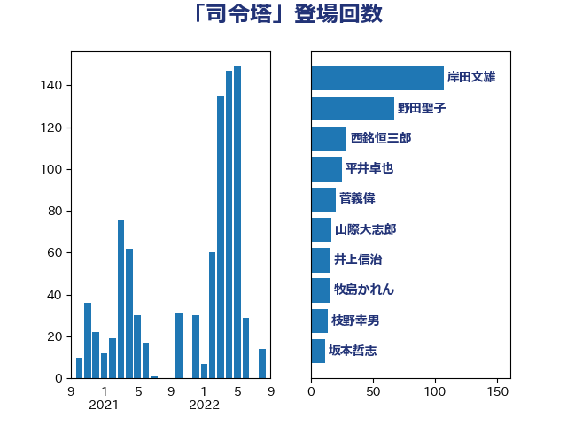

単語「司令塔」

| 岸田文雄 | 自由民主党 | 107 回 |
| 野田聖子 | 自由民主党 | 67 回 |
| 西銘恒三郎 | 自由民主党 | 29 回 |
| 平井卓也 | 自由民主党 | 25 回 |
| 菅義偉 | 自由民主党 | 20 回 |
| 山際大志郎 | 自由民主党 | 17 回 |
| 井上信治 | 自由民主党 | 16 回 |
| 牧島かれん | 自由民主党 | 16 回 |
| 枝野幸男 | 立憲民主党 | 14 回 |
| 坂本哲志 | 自由民主党 | 12 回 |
| 長妻昭 | 立憲民主党 | 12 回 |
| 堀場幸子 | 日本維新の会 | 11 回 |
| 塩川鉄也 | 日本共産党 | 10 回 |
| 末松信介 | 自由民主党 | 10 回 |
| 田村憲久 | 自由民主党 | 10 回 |
| 後藤茂之 | 自由民主党 | 9 回 |
| 東徹 | 日本維新の会 | 9 回 |
| 藤岡隆雄 | 立憲民主党 | 9 回 |
| 阿部司 | 日本維新の会 | 9 回 |
| 加藤勝信 | 自由民主党 | 8 回 |
| 川田龍平 | 立憲民主党 | 8 回 |
| 柴田巧 | 日本維新の会 | 8 回 |
| 藤井比早之 | 自由民主党 | 8 回 |
| 平沢勝栄 | 自由民主党 | 7 回 |
| 松本尚 | 自由民主党 | 7 回 |
| 小林鷹之 | 自由民主党 | 6 回 |
| 本田顕子 | 自由民主党 | 6 回 |
| 江田憲司 | 立憲民主党 | 6 回 |
| 石井苗子 | 日本維新の会 | 6 回 |
| 若宮健嗣 | 自由民主党 | 6 回 |
| 伊藤達也 | 自由民主党 | 5 回 |
| 石川博崇 | 公明党 | 5 回 |
| 若松謙維 | 公明党 | 5 回 |
| 鈴木英敬 | 自由民主党 | 5 回 |
| こやり隆史 | 自由民主党 | 4 回 |
| 中島克仁 | 立憲民主党 | 4 回 |
| 中野洋昌 | 公明党 | 4 回 |
| 伊藤岳 | 日本共産党 | 4 回 |
| 古川元久 | 国民民主党 | 4 回 |
| 吉田統彦 | 立憲民主党 | 4 回 |
| 國重徹 | 公明党 | 4 回 |
| 平林晃 | 公明党 | 4 回 |
| 末松義規 | 立憲民主党 | 4 回 |
| 藤川政人 | 自由民主党 | 4 回 |
| 西村康稔 | 自由民主党 | 4 回 |
| 三浦信祐 | 公明党 | 3 回 |
| 太栄志 | 立憲民主党 | 3 回 |
| 太田房江 | 自由民主党 | 3 回 |
| 宮路拓馬 | 自由民主党 | 3 回 |
| 早稲田ゆき | 立憲民主党 | 3 回 |
| 本田太郎 | 自由民主党 | 3 回 |
| 横山信一 | 公明党 | 3 回 |
| 浜地雅一 | 公明党 | 3 回 |
| 熊野正士 | 公明党 | 3 回 |
| 竹谷とし子 | 公明党 | 3 回 |
| 自見はなこ | 自由民主党 | 3 回 |
| 萩生田光一 | 自由民主党 | 3 回 |
| 金村龍那 | 日本維新の会 | 3 回 |
| 鎌田さゆり | 立憲民主党 | 3 回 |
| 階猛 | 立憲民主党 | 3 回 |
| 高野光二郎 | 自由民主党 | 3 回 |
| ながえ孝子 | 無所属 | 2 回 |
| 下村博文 | 自由民主党 | 2 回 |
| 中司宏 | 日本維新の会 | 2 回 |
| 中谷真一 | 自由民主党 | 2 回 |
| 伊藤俊輔 | 立憲民主党 | 2 回 |
| 加田裕之 | 自由民主党 | 2 回 |
| 吉良州司 | 無所属 | 2 回 |
| 国光あやの | 自由民主党 | 2 回 |
| 堤かなめ | 立憲民主党 | 2 回 |
| 小川淳也 | 立憲民主党 | 2 回 |
| 小西洋之 | 立憲民主党 | 2 回 |
| 山谷えり子 | 自由民主党 | 2 回 |
| 岡田克也 | 立憲民主党 | 2 回 |
| 庄子賢一 | 公明党 | 2 回 |
| 打越さく良 | 立憲民主党 | 2 回 |
| 新妻秀規 | 公明党 | 2 回 |
| 木原誠二 | 自由民主党 | 2 回 |
| 杉久武 | 公明党 | 2 回 |
| 松山政司 | 自由民主党 | 2 回 |
| 松野博一 | 自由民主党 | 2 回 |
| 林芳正 | 自由民主党 | 2 回 |
| 森田俊和 | 立憲民主党 | 2 回 |
| 武田良太 | 自由民主党 | 2 回 |
| 津島淳 | 自由民主党 | 2 回 |
| 熊谷裕人 | 立憲民主党 | 2 回 |
| 片山大介 | 日本維新の会 | 2 回 |
| 田村智子 | 日本共産党 | 2 回 |
| 福島みずほ | 社会民主党 | 2 回 |
| 羽田次郎 | 立憲民主党 | 2 回 |
| 菊田真紀子 | 立憲民主党 | 2 回 |
| 蓮舫 | 立憲民主党 | 2 回 |
| 西村智奈美 | 立憲民主党 | 2 回 |
| 谷田川元 | 立憲民主党 | 2 回 |
| 重徳和彦 | 立憲民主党 | 2 回 |
| 音喜多駿 | 日本維新の会 | 2 回 |
| 馬場伸幸 | 日本維新の会 | 2 回 |
| おおつき紅葉 | 立憲民主党 | 1 回 |
| 三ッ林裕巳 | 自由民主党 | 1 回 |
| 三木圭恵 | 日本維新の会 | 1 回 |
| 三谷英弘 | 自由民主党 | 1 回 |
| 上川陽子 | 自由民主党 | 1 回 |
| 世耕弘成 | 自由民主党 | 1 回 |
| 中山展宏 | 自由民主党 | 1 回 |
| 中川郁子 | 自由民主党 | 1 回 |
| 中村裕之 | 自由民主党 | 1 回 |
| 中西祐介 | 自由民主党 | 1 回 |
| 中谷一馬 | 立憲民主党 | 1 回 |
| 仁木博文 | 無所属 | 1 回 |
| 伊東良孝 | 自由民主党 | 1 回 |
| 冨樫博之 | 自由民主党 | 1 回 |
| 前川清成 | 日本維新の会 | 1 回 |
| 原口一博 | 立憲民主党 | 1 回 |
| 古屋範子 | 公明党 | 1 回 |
| 古川禎久 | 自由民主党 | 1 回 |
| 吉田久美子 | 公明党 | 1 回 |
| 吉田宣弘 | 公明党 | 1 回 |
| 吉田忠智 | 立憲民主党 | 1 回 |
| 堂故茂 | 自由民主党 | 1 回 |
| 大家敏志 | 自由民主党 | 1 回 |
| 大石あきこ | れいわ新選組 | 1 回 |
| 大野敬太郎 | 自由民主党 | 1 回 |
| 宗清皇一 | 自由民主党 | 1 回 |
| 宮崎政久 | 自由民主党 | 1 回 |
| 宮本徹 | 日本共産党 | 1 回 |
| 小倉將信 | 自由民主党 | 1 回 |
| 小寺裕雄 | 自由民主党 | 1 回 |
| 小林史明 | 自由民主党 | 1 回 |
| 小泉進次郎 | 自由民主党 | 1 回 |
| 小里泰弘 | 自由民主党 | 1 回 |
| 山口壯 | 自由民主党 | 1 回 |
| 山崎正恭 | 公明党 | 1 回 |
| 山崎誠 | 立憲民主党 | 1 回 |
| 山本博司 | 公明党 | 1 回 |
| 山田太郎 | 自由民主党 | 1 回 |
| 岡本あき子 | 立憲民主党 | 1 回 |
| 岩渕友 | 日本共産党 | 1 回 |
| 平将明 | 自由民主党 | 1 回 |
| 平木大作 | 公明党 | 1 回 |
| 後藤祐一 | 立憲民主党 | 1 回 |
| 掘井健智 | 日本維新の会 | 1 回 |
| 斉藤鉄夫 | 公明党 | 1 回 |
| 斎藤アレックス | 国民民主党 | 1 回 |
| 早坂敦 | 日本維新の会 | 1 回 |
| 木原稔 | 自由民主党 | 1 回 |
| 杉尾秀哉 | 立憲民主党 | 1 回 |
| 村井英樹 | 自由民主党 | 1 回 |
| 松木けんこう | 立憲民主党 | 1 回 |
| 柳ヶ瀬裕文 | 日本維新の会 | 1 回 |
| 柳本顕 | 自由民主党 | 1 回 |
| 柴山昌彦 | 自由民主党 | 1 回 |
| 梅村みずほ | 日本維新の会 | 1 回 |
| 森まさこ | 自由民主党 | 1 回 |
| 森屋隆 | 立憲民主党 | 1 回 |
| 森山浩行 | 立憲民主党 | 1 回 |
| 武見敬三 | 自由民主党 | 1 回 |
| 深澤陽一 | 自由民主党 | 1 回 |
| 源馬謙太郎 | 立憲民主党 | 1 回 |
| 玄葉光一郎 | 立憲民主党 | 1 回 |
| 玉木雄一郎 | 国民民主党 | 1 回 |
| 田村まみ | 国民民主党 | 1 回 |
| 田畑裕明 | 自由民主党 | 1 回 |
| 白石洋一 | 立憲民主党 | 1 回 |
| 矢倉克夫 | 公明党 | 1 回 |
| 石井啓一 | 公明党 | 1 回 |
| 石井正弘 | 自由民主党 | 1 回 |
| 石川昭政 | 自由民主党 | 1 回 |
| 礒崎哲史 | 国民民主党 | 1 回 |
| 神田憲次 | 自由民主党 | 1 回 |
| 神谷裕 | 立憲民主党 | 1 回 |
| 稲田朋美 | 自由民主党 | 1 回 |
| 篠原孝 | 立憲民主党 | 1 回 |
| 芳賀道也 | 国民民主党 | 1 回 |
| 落合貴之 | 立憲民主党 | 1 回 |
| 西岡秀子 | 国民民主党 | 1 回 |
| 谷合正明 | 公明党 | 1 回 |
| 谷川とむ | 自由民主党 | 1 回 |
| 里見隆治 | 公明党 | 1 回 |
| 金子恭之 | 自由民主党 | 1 回 |
| 鈴木義弘 | 国民民主党 | 1 回 |
| 阿部知子 | 立憲民主党 | 1 回 |
| 青柳仁士 | 日本維新の会 | 1 回 |
| 馬場雄基 | 立憲民主党 | 1 回 |
| 高木かおり | 日本維新の会 | 1 回 |
| 高見康裕 | 自由民主党 | 1 回 |